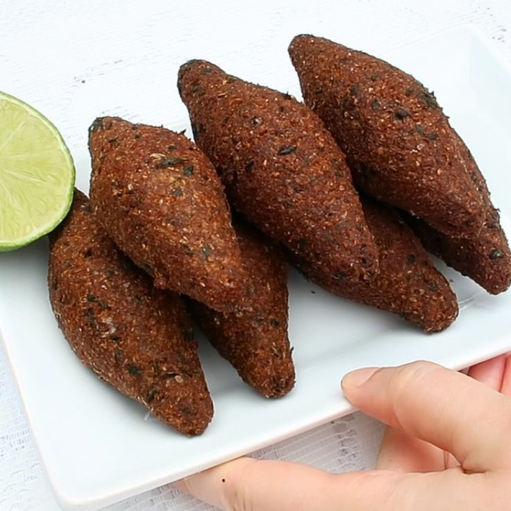

Quibe tradicional
- Coloque o trigo em uma tigela e cubra com água. Deixe de molho na água por 3 horas.
- Coloque o trigo em um pano limpo e esprema até retirar toda a água.
- Em um liquidificador, bata a cebola com a hortelã, o sal e a pimenta-do-reino.
- Em uma vasilha, junte a mistura de temperos, o trigo e a carne. Misture bem.
- Modele os kibes.
- Em uma panela, aqueça o óleo e frite os kibes até ficarem dourados.
- Retire o excesso de óleo sobre papel toalha. Sirva quente.
